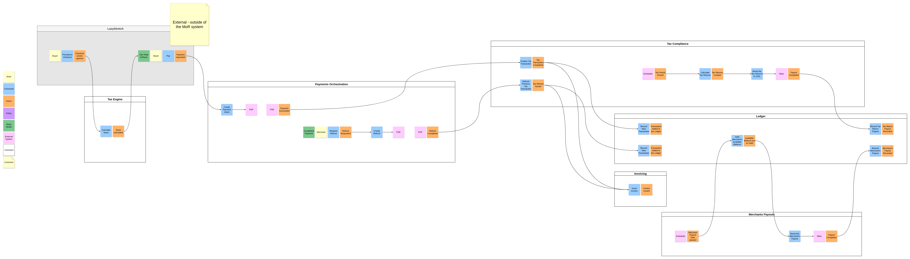

MoR System Design
Event Storming & Bounded Contexts
EventStorming is a workshop format that helps explore complex business domains.
The goal of this workshop is to represent business processes in the system as a series of domain events.
In the diagram below I've tried to express the scenarios from the Requirements section:
- Calculating taxes for the sale and processing a payment
- Creating refunds for the completed payments
- Recording payments/refunds for the further tax returns
- Recording committed transactions as the ledger entries
- Merchant payouts and tax returns
- Issuing invoices to the buyers

The stickers are grouped into Bounded Contexts.
The division isn't final - it's just my attempt, based on what came to mind while working on the diagram.
A real SME may break the MoR system down differently.
This diagram helps to:
- Represent an attempt to break down the system into Bounded Contexts,
- Show communications (essentially, coupling) between them, based on the business processes (system behavior, or function).
Bounded Contexts decisions#
Tax Engine is extracted into a separate Bounded Context.
- In one of the first attempts to group the stickers, I placed the Tax Calculation stickers in the same group as the rest of the tax-related stickers (Tax Compliance).
- Later, I realized that these groups of stickers represent different business logic, involved in separate business processes (calculating tax for a sale vs. tax returns). They may also have different quality attributes (more on that later in the document): tax calculation is part of the checkout flow, while tax returns happen on a schedule. So I concluded that it makes sense to decouple them.
Payments Orchestration context is responsible for purely orchestrating payments and refunds through the PSP.
- Its main purpose is to send requests to the PSP to charge or refund the Total Amount, previously calculated by the Tax Engine and provided directly in the request. Charging or refunding money through the PSP does not require the full breakdown of line items into net/tax/total amounts. This is why it is decoupled from the calculation logic and data structures.
- It also receives webhooks from the PSP and signals (publishes events) when a payment or refund has been processed on the PSP side. At that point, the money transfer can be considered a fulfilled fact, and other parts of the system can react to these events asynchronously.
Tax Compliance Bounded Context is responsible for recording the fulfilled facts.
- Its main purpose is to consume the event from the Payments Orchestration context, and record that the corresponding
TaxCalculationcan be converted into a completedTaxTransaction. - When a
TaxTransactionis recorded, a corresponding business event is published. This event contains the full breakdown of line items, so other contexts (Ledger and Invoicing) can act upon it. - At the end of the tax period,
TaxTransactionsare used to collect the Tax Return lines to be submitted to the authorities.
- Its main purpose is to consume the event from the Payments Orchestration context, and record that the corresponding
Ledger listens to events from Tax Compliance for the reason described above: those events should have all of the needed data within the event payload.
- From a business perspective, it would be more correct for the Ledger to listen to events from Payments Orchestration. If at some point it becomes clear that those events carry enough data, we should switch to that.
- The ledger also records transactions for remitted taxes and merchant payouts.
Merchants Payouts is responsible for the business process of paying out proceeds to merchants.
- In order to make a payout, we need to put the merchant's current available balance on hold, otherwise a concurrent transaction (a refund, for example) may get lost. To do this, there is a communication from the Merchants Payouts to the Ledger context - and this communication must be of a strong consistency type (meaning, it must be synchronous), which will put the available balance from the
MERCHANTS_PAYABLEinto theMERCHANTS_PAYOUT_PENDINGledger account.
- In order to make a payout, we need to put the merchant's current available balance on hold, otherwise a concurrent transaction (a refund, for example) may get lost. To do this, there is a communication from the Merchants Payouts to the Ledger context - and this communication must be of a strong consistency type (meaning, it must be synchronous), which will put the available balance from the
Invoicing is the Bounded Context responsible for generating and issuing the documentation for the Buyers.
- For example, document numbers must be sequential and traceable.
- The PDFs can be uploaded to a publicly available S3 bucket, or a similar object storage.